Hooks na Prática
Refatorando o componente de Class sem Hooks para um componente de Função com Hooks.
Atualizando o estado do componente:
- importando useEffect:
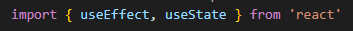
- chamando useEffect:
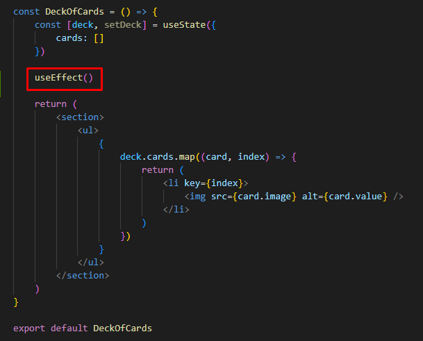
ATENÇÃO AO LOCAL DE CHAMADA DO useEffect()
- o useEffect recebe uma função por parâmetro e essa função será executada assim que o componente for montado (exatamente como o componentDidMount):
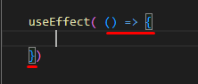
- declarando o comportamento do useEffect (o mesmo comportamento do componentDidMount):
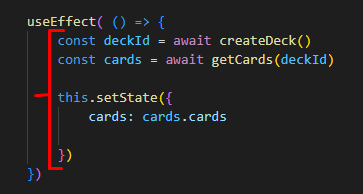
- substituindo o método atualizador antigo pelo novo:
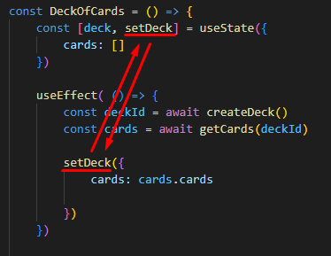
- note que há "await" dentro do comportamento do useEffect, então precisamos de um "async", porém, a declaração assíncrona retorna um objeto assíncrono (uma promisse) e o useEffect só aceita retornos de Nada ou de Funções de Limpeza (async retorna uma promisse, não é nem Nada e nem Limpeza):
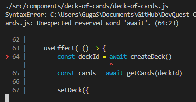
- criando uma nova Função que recebe uma função assíncrona, jogando todo o conteúdo de baixo, para cima e chamando a nova Função fetchData:
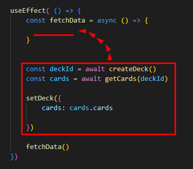 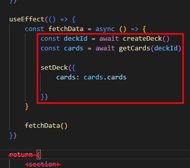
- NOTA: Quando que o useEffect() é chamado na prática?
Ele roda no momento que o componente é montado na tela e quando o componente é atualizado.
Da forma como fizemos acima, vai dar problema, pois ele é atualizado quando ele é chamado, daí quando ele for chamado, ele vai atualizar e quando ele é atualizado ele é chamado, daí quando ele for chamado ele vai ser atualizado e assim será infinitamente.
- Pra resolver o problema acima, precisamos passar pro useEffect um segundo parâmetro (uma dependência).
O primeiro seria a Arrow Function que simula o DidMount:
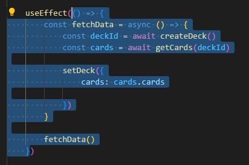
O segundo seria um Array Vazio:
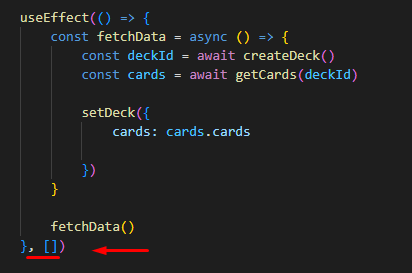
Quando existe esse Array vazio, o useEffect entende: "executar a Função que simula o DidMount apenas na montagem do componente.".
- Resumo:
1 - Se eu quiser que o useEffect carrege um componente apenas uma vez, precisa de uma dependência (um Array Vazio) no segundo parâmetro do useEffect.
2 - Se eu quiser que o useEffect fique sempre carregando o componente, não precisa passar nada além da "Função-Simuladora".
3 - Se eu quiser que o useEffect carregue um componente somente quando o estado for modificado, precisa passar pra dentro da dependência (do Array Vazio) o que eu quero enganchar (variável "deck", por exemplo). Daí toda vez que o estado do componente for atualizado, o useEffect vai tratar de carregar o componente de novo. NOTA: Como a dependência é um Array, dentro dele pode ter muitas variáveis sendo "escutadas" ao mesmo tempo.
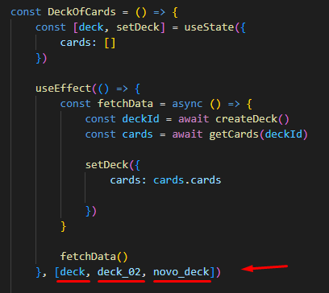
- Final Tip: O useEffect pode ser chamado várias vezes dentro do meu componente de função.
Ex: um useEffect que fica escutando novas variáveis e para cada modificação no estado de cada uma delas, dispara uma função diferente:
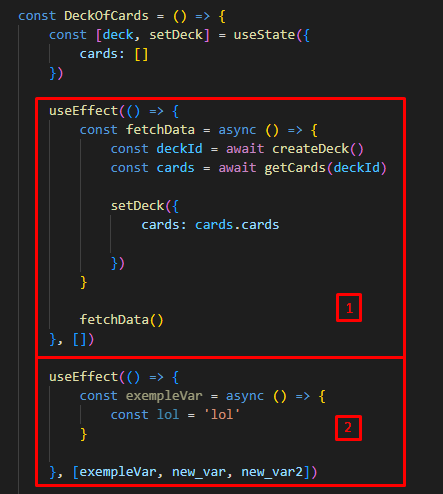